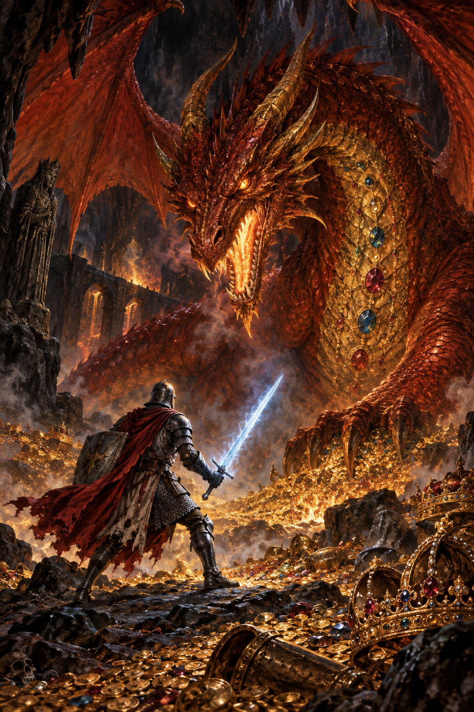

Explore: arrows/WASD or D-pad travel · Enter/E/A use · Tab/B next target · I/X inspect · V/Y pack · R/LB rest · F3/RB rescue · M sound. Fight: Enter/F/A attack · C/X spell · B/PAD-B brace · E/LB evade · P/Y potion.
THE NOTEBOOK STORY
As he rides down the road, Sir Bedivere remembers vividly his fight with Sir Gareth. The sickening crunch of his lance on Sir Gareth’s powerful shield, the clashing of swords and shields and the smashing down of Sir Gareth’s sword down on his own weapon, smashing it entirely. Then the embarrassing unlacing of the helmet and yielding of his weapon. At this moment, Sir Bedivere vowed to find a weapon powerful enough to defeat the powerful Sir Gareth.
Sir Bedivere rode down the road, trying to find someone or something that would help him to find a sword. After riding for about 2 days, a town came into sight over the hill. Sir Bedivere became interested and rode to the town. When he got there, he found the town in total havoc. People were shouting at a man standing on a platform, and the man seemed to be protesting. As soon as Sir Bedivere rode into the town, a great cheering went through the crowd, and the whole crowd went silent. Sir Bedivere rode through the crowd and said, “I have come seeking a sword. One that would enable me to defeat even the greatest knights of the Round Table!”
Continue the surviving notebook passage
More murmurings went through the crowd, and the man said, “There is a place up in those hills,” pointing to the hills past the town, “where the great dragon Doximodius lives. He allegedly stole a great sword from the powerful warrior, Sir Tarquine. This sword is supposed to have powers beyond belief. It hungers for blood and attacks it almost with a mind of its own. When wielded by a good knight, Sir Tarquine turned bad and thus it was possible to take it from him. The dragon knew this, and also knew that it was the only weapon that could destroy him, so he took it.”
Hearing this, Sir Bedivere said, “I shall find this sword, and destroy this Doximodius, and along with him shall all of my enemies fall!” The knight rode out of the town with a renewed hope and confidence, but also a troubled thought in the back of his mind.
Now that he was in the hills, Sir Bedivere was finding out the feelings that dragon-hunters had. He was scared! The barren hills had a foreboding look to them, and the knight could feel the cold wind of winter coming on. After about half a day of riding, Sir Bedivere found the cave. The hole stank like burning flesh, and all the rock around it was charred black. He took a deep breath and went in.
Inside the cave it was pitch black, so he brought a torch with him. Sir Bedivere lit the torch and walked quietly down the long, dank tunnel. There were many exits off the main tunnel, but he decided to stick to the middle one. After about 2 hours of walking like this, he saw a light up ahead. He ran closer to it and gasped in awe at the sight before him. A glow was coming from a tremendous sword suspended by a single thread in the center of the room. The glow from this sword reflected off the thousands of gold, silver, and copper coins piled in a ring around the sword. Jewels, gems and other miscellaneous objects lay strewn about the room, also.
Sir Bedivere, still amazed, walked into the room observing everything. Suddenly behind him a slow pounding on the floor came, and the coins shivered and jingled as the sound became louder and louder. Sir Bedivere, shaken out of his trance-like state, looked around desperately for a weapon. Finding nothing else but the sword, he climbed over a mound of coins and jewels until he was next to it. The pounding became louder. Sir Bedivere desperately tried to take the sword from the thread. The sword hummed lightly, and a voice came from it into the knight’s mind. “Greetings, Sir Bedivere. I am glad you are here.”
The pounding, now discernible as footsteps, was becoming almost deafening. Sir Bedivere took a deep breath and grasped the sword by the handle. A great flash of light followed, and the sword came flashing into Sir Bedivere’s hand. It looked big enough, but it felt like nothing in his hand. The sword said, “You are now my master. Take me and together we shall destroy Doximodius, last of the Devil-worms. For I am Dracobrane, the Dragonslayer! No dragon has ever withstood me, and none shall!”
It was Doximodius, in his full glory! A huge red-gold dragon that seemed to be able to fill this immense cavern. The dragon’s underside was totally covered with gems, and he seemed to be totally impenetrable. In a deafening voice, the dragon boomed, “Foolish mortal! Did you think you could slay me with this puny thing that you call a weapon? You shall die as all others that have dared to set foot on this forbidden ground!”
With this, Doximodius shot a searing flame at the pile Sir Bedivere was hiding behind. It was totally melted or thrown out of the way, exposing Sir Bedivere. The dragon was building up for another burst when Sir Bedivere felt an uncontrollable power encase him. As if possessed, he screamed at the top of his lungs in the voice of the sword, “Doximodius! I am Dracobrane, wielder of death to all dragons! Now, go and join the rest of your brothers!”
Sir Bedivere/Dracobrane leaped into the air and, with one powerful slash, he cleaved Doximodius’ skull in half.
In three days, after joining in the festivities at the town, Sir Bedivere rode back to Camelot. There he set up a joust with Sir Gareth, this time knowing that he had a trustworthy sword. “Ha! I shall kill that boastful excuse for a knight, and hang his head from the highest post!” “O Lord, what have I said? This sword’s blood-lust must be getting to me. I must control myself tomorrow!”
On the day of the joust Sir Bedivere and Sir Gareth fought well. When Sir Bedivere was knocked off his horse, Gareth jumped off his steed to join in sword combat. Sir Bedivere’s sword, overtaken by the blood-lust, easily smashed through all of Sir Gareth’s defenses, bringing him to his knees. “My lord, please spare me! My blood is not worthy of this great weapon!” cried Sir Gareth.
